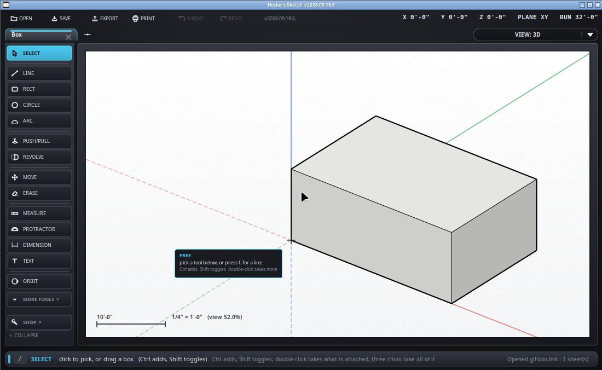

Put a measurement on the drawing.
Keyboard: D

A dimension wants a corner, a midpoint, a center, or a point on an edge at each end. It will not lie across blank paper: a number measuring nothing cannot be driven by the drawing and will never update when the drawing changes, which makes it worse than no number at all.
In SketchUp the way round that is to draw a temporary line where you need it, dimension to that, and rub the line out afterwards - or to use the tape measure, which will measure anything anywhere and leave a guide behind.
Pick a dimension and type a new length, or use /resize. The
drawing moves to match the number - the geometry follows the dimension, not
the other way round - so a wall told it is 12'-6" becomes 12'-6".
Drag one with the move tool to shift the line off to one side without changing what it measures.
In whatever the drawing is set to, rounded to the ROUNDED TO setting along
the bottom - sixteenths unless you say otherwise. /units swaps
between feet-and-inches and millimeters, and every dimension on the sheet
changes with it.